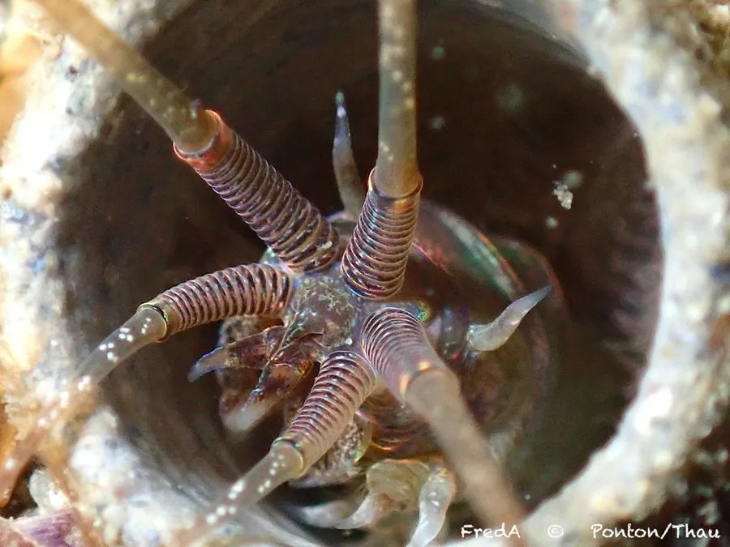

其他无脊椎动物 · 动物界
巢沙蚕 Diopatra neapolitana

栖于沙中、以贝壳和藻片筑成直立栖管的多毛类，栖于潮间带沙泥滩，是底栖鱼类与涉禽的重要饵料。
- 分类
- 门环节动物门纲多毛纲目矶沙蚕目科欧努菲虫科属巢沙蚕属
- 栖息环境
- 潮间带与浅海沙泥滩，栖管伸出沙面
- 地理分布
- 欧洲大西洋沿岸、地中海至东亚沿海
- 保护级别
- 常见种，无保护级别；滩涂扰动与污染是威胁
物种志
巢沙蚕的体长可达二十至三十厘米，体呈长圆柱形，体节众多，每节有疣足，疣足上生有羽状的鳃丝。头部有五枚触手和一对坚硬的颚，能咬住猎物。它最特别的是栖管：用分泌的黏液把贝壳碎片、藻片和沙粒粘成一根直立的管子，管口伸出沙面，形如一小丛羽饰。
它分布于欧洲大西洋沿岸、地中海至东亚的潮间带和浅海沙泥滩，垂直穴居于沙中，栖管伸出沙面数厘米。它是杂食性的底栖动物，夜间伸出触手捕食小型动物和有机碎屑，受扰即缩回管内。它是底栖鱼类和涉禽的重要饵料，也被用作钓饵。它对沉积物污染和滩涂扰动敏感，可作为底质环境的指示种。
形态与习性
- 体长可达二十至三十厘米
- 栖管贝壳、藻片与沙粒粘成，直立伸出沙面
- 头部五枚触手与一对坚硬颚
- 食性小型动物与有机碎屑，夜间取食
- 生态底栖鱼类与涉禽的重要饵料
- 指示性对沉积物污染与滩涂扰动敏感
趣味知识
- 它把贝壳、碎藻一片片粘成一根管子，住在里面像插了一面小旗。
- 退潮时管口伸出沙面，人一走近，它就整条缩回管底。
- 钓鱼人常挖它当饵，它的栖管一拔就断，取虫要有点技巧。